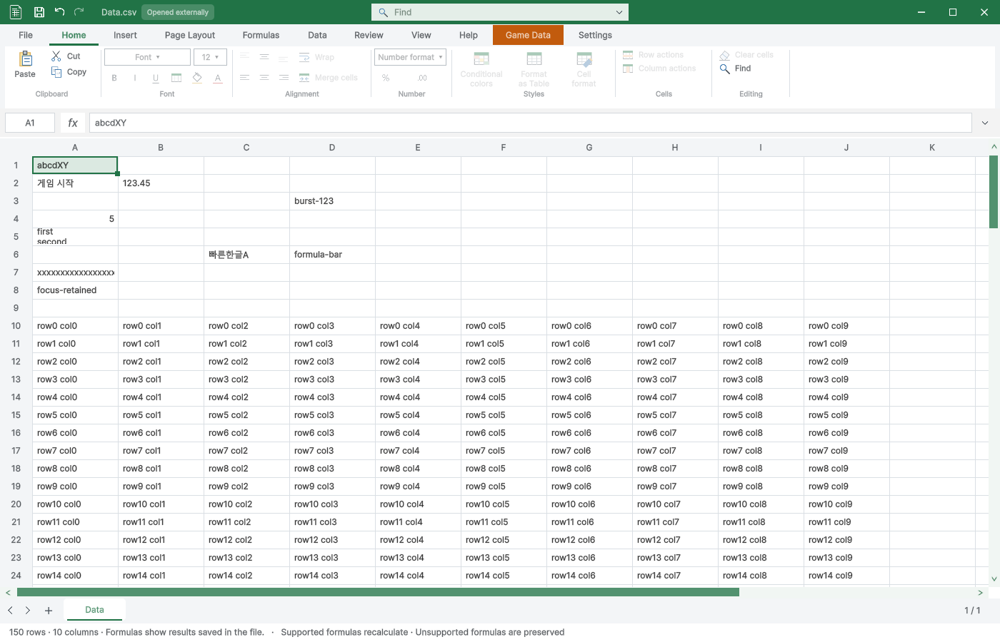

Tracefolio REPORTS & ISSUES
Tracefolio REPORTS & ISSUES재제출 전 입력·저장·성능 QA
기존 기록 이전원문에 기록된 작업 내용과 당시 검증 범위를 정리한 보관 기록입니다.
당시 보고서의 해당 작업 범위. 현재 제품 재실행 또는 전체 완수 판정이 아님.
현재 소스 · Windows · Unity 6000.0.83f1
발견하고 수정한 문제
첫 화면 갱신 전에 키가 연달아 도착하면 burst-123이 b만 남았습니다. 텍스트 컨트롤이 포커스를 받기 전까지 후속 문자와 Backspace를 초안에 보존하도록 수정했습니다. 같은 조건과 한글·F2·즉시 Enter 조합을 다시 검사해 통과했습니다.
수정 전 재현 · 수정 후 입력 결과 · 한글 전체 표 TC · 실제 검사 소스 해시
이번 실행 결과
XLSX 입력 52개 · CSV 입력 52개 · 닫기 9개(26개 조건) · 표 기능 198개(3271개 조건) · Play 보호 6개 통과. 렌더 12개 상태에서 각각 100회, 총 1,200회 측정했습니다. 컴파일은 경고·오류 0개입니다.
입력·저장·반복 검사
| 검사 | XLSX | CSV |
|---|---|---|
| 새 파일은 미저장 표시 없음 | 통과 | 통과 |
| 연속 영문 입력 4자 보존 | 통과 | 통과 |
| Enter 확정 및 다음 행 이동 | 통과 | 통과 |
| 완성 한글·공백 입력과 Tab 이동 | 통과 | 통과 |
| 숫자 입력 및 Shift Tab 역방향 이동 | 통과 | 통과 |
| Escape 초안 취소 시 기존 값 유지 | 통과 | 통과 |
| F2 기존 값 편집·삭제 후 확정 | 통과 | 통과 |
| 중간 Repaint 없는 8키 연속 입력 | 통과 | 통과 |
| 수식 문자열 전체 입력 및 확정 | 통과 | 통과 |
| Alt Enter 셀 내 줄바꿈 | 통과 | 통과 |
| 중간 Repaint 없는 한글 입력 즉시 Enter | 통과 | 통과 |
| F2 포커스 대기 중 문자 입력·Backspace·즉시 Enter | 통과 | 통과 |
| 수식 입력줄 마우스 클릭 후 연속 입력·확정 | 통과 | 통과 |
| 160자 빠른 연속 입력 손실 없음 | 통과 | 통과 |
| 포커스 상실 콜백 뒤 초안 보존 | 통과 | 통과 |
| 내부 클립보드 500셀 붙여넣기 | 통과 | 통과 |
| 500셀 붙여넣기 Undo | 통과 | 통과 |
| 500셀 붙여넣기 Redo | 통과 | 통과 |
| Ctrl S 원본 저장 및 미저장 표시 해제 | 통과 | 통과 |
| 원본 다시 열어 한글·대량 입력 유지 | 통과 | 통과 |
| 반복 입력 1 | 통과 | 통과 |
| 반복 입력 2 | 통과 | 통과 |
| 반복 입력 3 | 통과 | 통과 |
| 반복 입력 4 | 통과 | 통과 |
| 반복 입력 5 | 통과 | 통과 |
| 반복 입력 6 | 통과 | 통과 |
| 반복 입력 7 | 통과 | 통과 |
| 반복 입력 8 | 통과 | 통과 |
| 반복 입력 9 | 통과 | 통과 |
| 반복 입력 10 | 통과 | 통과 |
| 반복 입력 11 | 통과 | 통과 |
| 반복 입력 12 | 통과 | 통과 |
| 반복 입력 13 | 통과 | 통과 |
| 반복 입력 14 | 통과 | 통과 |
| 반복 입력 15 | 통과 | 통과 |
| 반복 입력 16 | 통과 | 통과 |
| 반복 입력 17 | 통과 | 통과 |
| 반복 입력 18 | 통과 | 통과 |
| 반복 입력 19 | 통과 | 통과 |
| 반복 입력 20 | 통과 | 통과 |
| 반복 열기 후 첫 입력 1 | 통과 | 통과 |
| 반복 열기 후 첫 입력 2 | 통과 | 통과 |
| 반복 열기 후 첫 입력 3 | 통과 | 통과 |
| 반복 열기 후 첫 입력 4 | 통과 | 통과 |
| 반복 열기 후 첫 입력 5 | 통과 | 통과 |
| 반복 열기 후 첫 입력 6 | 통과 | 통과 |
| 반복 열기 후 첫 입력 7 | 통과 | 통과 |
| 반복 열기 후 첫 입력 8 | 통과 | 통과 |
| 반복 열기 후 첫 입력 9 | 통과 | 통과 |
| 반복 열기 후 첫 입력 10 | 통과 | 통과 |
| 반복 열기 후 첫 입력 11 | 통과 | 통과 |
| 반복 열기 후 첫 입력 12 | 통과 | 통과 |

렌더 성능
각 상태 준비 10회 후 100회 측정. 입력 이벤트 시간에는 강제 Repaint가 포함되어 실제 키보드 지연으로 해석하지 않습니다. Mono 할당량 카운터는 근거로 사용하지 않았습니다.
| 파일 | 조건 | 평균 | P95 | 최대 |
|---|---|---|---|---|
| ArcadeText | Edit-Home-top | 15.67 ms | 19.55 ms | 31.17 ms |
| ArcadeText | Edit-Localization-top | 11.09 ms | 14.02 ms | 16.07 ms |
| ArcadeText | Edit-Localization-scrolled | 12.39 ms | 16.49 ms | 21.03 ms |
| ArcadeText | Play-Home-top | 17.52 ms | 22.11 ms | 24.40 ms |
| ArcadeText | Play-Localization-top | 12.98 ms | 17.03 ms | 21.71 ms |
| ArcadeText | Play-Localization-scrolled | 12.73 ms | 15.85 ms | 18.69 ms |
| 게임 데이터 | Edit-Home-top | 12.79 ms | 18.06 ms | 22.22 ms |
| 게임 데이터 | Edit-Localization-top | 10.14 ms | 14.62 ms | 20.51 ms |
| 게임 데이터 | Edit-Localization-scrolled | 10.39 ms | 14.22 ms | 17.53 ms |
| 게임 데이터 | Play-Home-top | 11.62 ms | 15.95 ms | 19.72 ms |
| 게임 데이터 | Play-Localization-top | 9.30 ms | 12.52 ms | 19.24 ms |
| 게임 데이터 | Play-Localization-scrolled | 9.61 ms | 12.85 ms | 20.02 ms |
저장·닫기 보호
닫기 취소·저장·버리기, 50회 중복 닫기 요청, 인라인·수식 미확정 초안, 외부 변경으로 인한 저장 실패, 깨끗한 창 닫기, Ctrl W를 다시 검사했습니다.
실제 닫기 결과 · 한글 표 검사 상세 · 컴파일 로그
Play 보호
등록 게임 데이터·글로벌 Enum의 저장 차단과 원본 불변, 일반 스프레드시트의 편집 허용을 확인했습니다. 자동화 API는 예외 대신 구조화된 오류 응답을 반환하는 현재 계약으로 검사했습니다.
한글 Play 검사 · 실행 근거
제출 파일 검사
Python 파생 캐시 포함과 격리 프로젝트 문서 메타데이터 차이를 발견해 정리했습니다. 깨끗한 프로젝트에서 패키지를 재생성한 뒤 원본 파일 1,068개와 메타데이터·GUID를 대조해 차이 0개를 확인했습니다. 이 패키지를 별도의 빈 Unity 프로젝트에 실제 임포트하여 69개 검사도 통과했습니다. 등록 테이블 24개와 바이너리 참조, 예제 씬 25개의 누락 스크립트 0개, 원본 검색 연결을 포함합니다. 씬 검사는 편집 모드에서 로드한 결과이며 모든 게임을 수동 플레이한 결과로 표시하지 않습니다.
최신 QA 패키지 · 패키지 바이트·GUID 검사 · 새 프로젝트 임포트 한글 검사
SHA-256: 464dac9e2451c059883c089fa82ad3b95ee4859c004b96308c28e6b8023419dc
검증 범위
Windows Unity 6000.0.83f1의 격리 실제 HostView 검사입니다. 사용자 화면·키보드·클립보드를 조작하지 않았습니다.
완성된 한글 키 이벤트를 검증했습니다. 실제 Windows IME 조합·키보드 하드웨어 입력은 미확인입니다.
렌더 시간은 숨겨진 HostView 호출 시간이며 데스크톱 FPS 또는 실제 체감 입력 지연과 동일하지 않습니다.
닫기 검사는 Unity 지연 콜백 펌프를 명시 실행했습니다. 비표시 환경의 자동 지연 콜백 진행을 검증한 것은 아닙니다.
기존 테스트 결과를 재사용하지 않고 현재 소스로 다시 실행했습니다. 다른 Unity 버전·운영체제는 검사하지 않았습니다.
실패 — 데이터 디렉터리 잠금으로 노드 시작 실패, rg 사용
제안 시간: 30~50분 · 실제 소요: 33분 43초 · 완료: 2026-10-29 13:20:51 KST
원문과 편집 이력
- 원문 SHA-256:
29c4cf668a956bfb2da82f489b8a25f36a663d4f361ca5367e4c13831e614435 - 표시 날짜는 원본 파일의 수정 시각입니다. 작업 완료 시각은 원문에 있는 값을 기준으로 확인합니다.